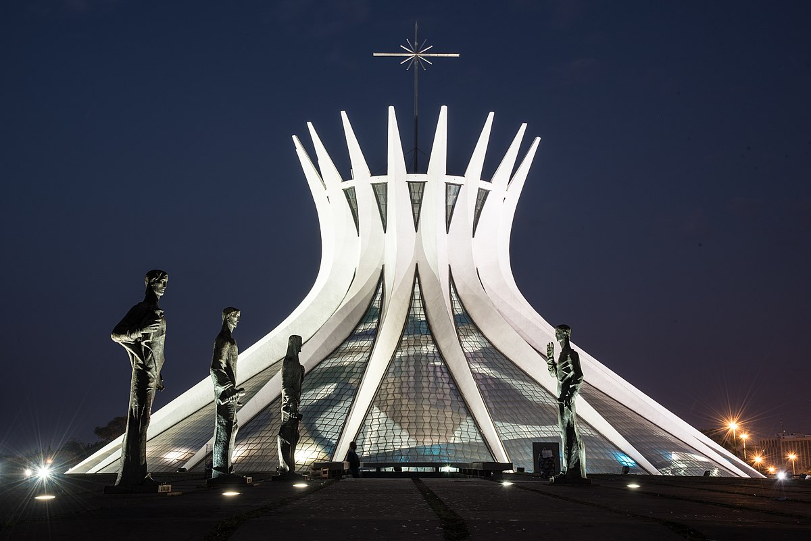
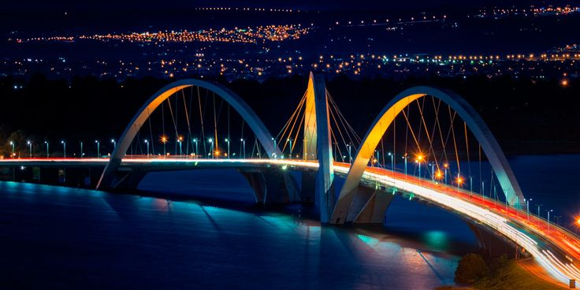
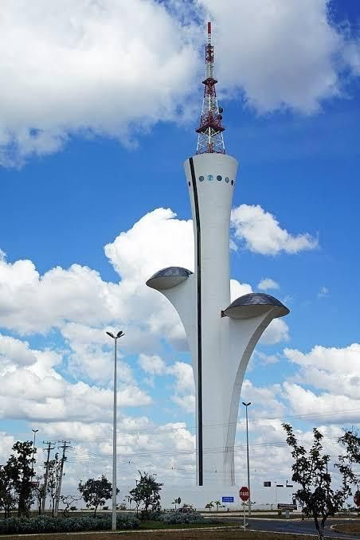

Explore os principais pontos turísticos de Brasília.
Descubra a história e a beleza da capital do Brasil.

Catedral de Brasília
Setor Central, Brasília

Ponte JK
Setor Leste, Brasília

Torre Digital
Setor de Administração, Brasília